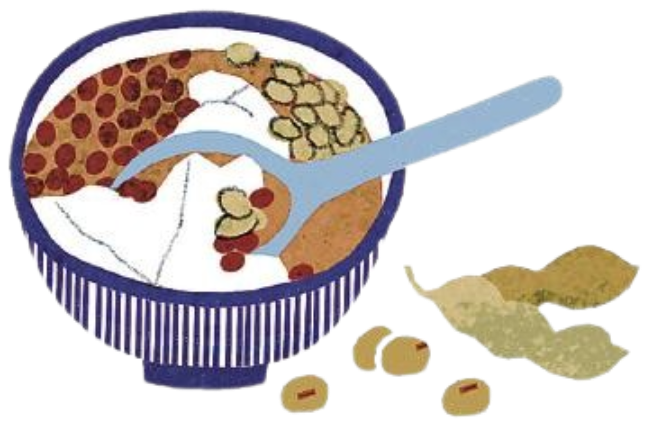
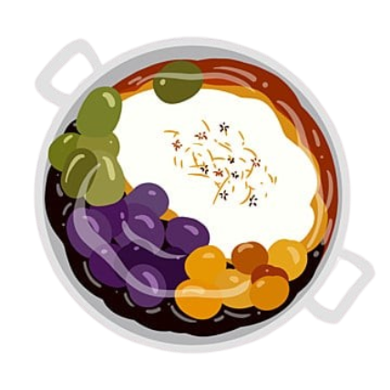
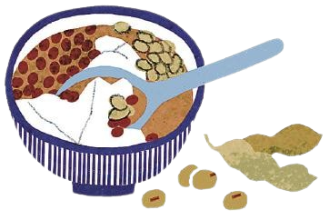
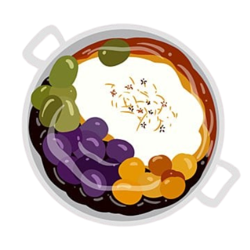
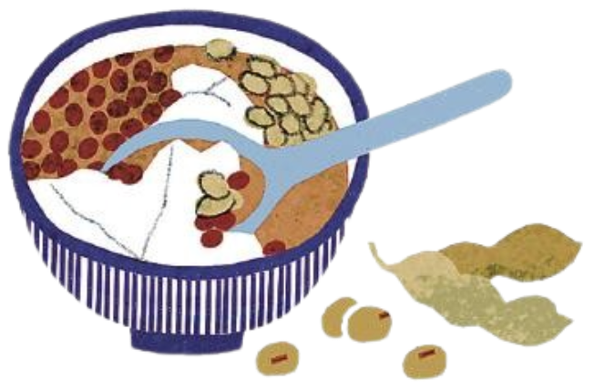
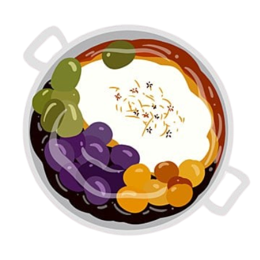

夏天解渴消暑的最佳甜品
關於豆花我們製作了幾個不同主題頁面，點選左上角"更多內容 ▼"即可進入頁面
每個喜歡豆花的人，心中都有一家最推的豆花店。
但說到底，那家店，常常就是離自己最近的那一家。
就像手搖飲，每個人最愛的，往往是下樓轉角就能買到的那杯。
味道固然重要，方便才是日常裡的第一名。
豆花，承載著時光的滋味，雖歷經歲月洗禮，依然是人們心中不變的甜蜜選擇。
主要由黃豆製成，口感滑嫩細緻，無論是加上糖水、花生還是粉圓，每一口都能帶來溫柔的甜蜜。
它不僅是夏天消暑的首選，更是許多人童年的回憶與味覺的慰藉。


魔法豆花小舖管理員信箱：123456789@gmail.com